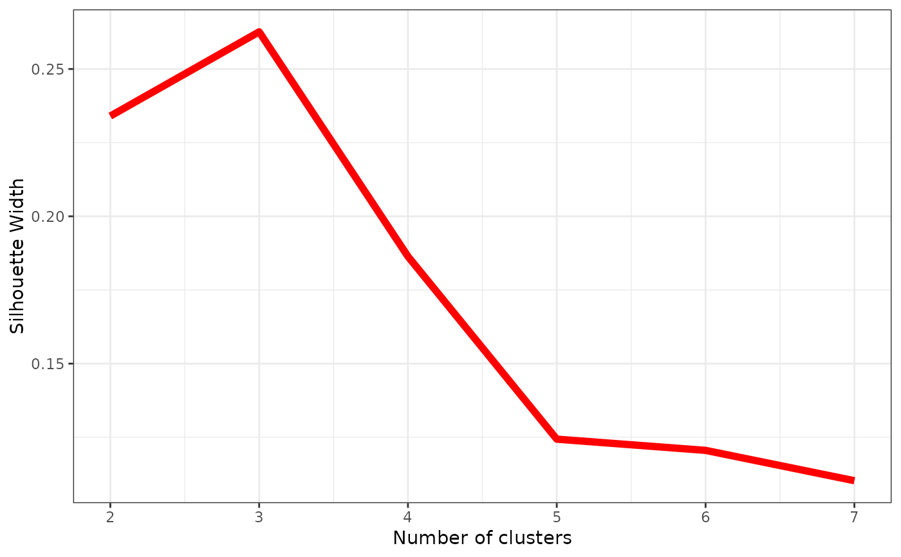

Calculate silhouette widths index for various numbers of partitions
get_sil_widths.RdComputes silhouette widths index for several possible numbers of clusters(partitions) k, which determines how well an object falls within their cluster compared to other clusters. The best number of clusters k is the one with the highest silhouette width.
Usage
get_sil_widths(dist_mat, max.k = 10)
# S3 method for sil_width_df
plot(x, ...)Arguments
- dist_mat
A Gower distance matrix, the output of a call to
get_gower_dist.- max.k
The maximum number of clusters(partitions) to search across.
- x
A
sil_width_dfobject; the output of a call toget_sil_widths().- ...
Further arguments passed to
ggplot2::geom_lineto control the appearance of the plot.
Details
get_sil_widths calls cluster::pam on the supplied Gower distance matrix with each number of clusters (partitions) up to max.k and stores the average silhouette widths across the clustered characters. When plot = TRUE, a plot of the sillhouette widths against the number of clusters is produced, though this can also be produced seperately on the resulting data frame using plot.sil_width_df(). The number of clusters with the greatest silhouette width should be selected for use in the final clustering specification.
Value
For get_sil_widths(), it produces a data frame, inheriting from class "sil_width_df", with two columns: k is the number of clusters, and sil_width is the silhouette widths for each number of clusters. If plot = TRUE, the output is returned invisibly.
For plot() on a get_sil_widths() object, it produces a ggplot object that can be manipulated using ggplot2 syntax (e.g., to change the theme or labels).
See also
vignette("char-part") for the use of this function as part of an analysis pipeline.
Examples
# See vignette("char-part") for how to use this
# function as part of an analysis pipeline
data("characters")
#Reading example file as categorical data
Dmatrix <- get_gower_dist(characters)
#Get silhouette widths for k=7
sw <- get_sil_widths(Dmatrix, max.k = 7)
sw
#> k sil_width
#> 1 2 0.2340255
#> 2 3 0.2626128
#> 3 4 0.1863738
#> 4 5 0.1243595
#> 5 6 0.1205568
#> 6 7 0.1102649
plot(sw, color = "red", size =2)
